Três posts por dia, todo dia, alimentados pelo que a loja já publicou e funcionou. A grade fixa os horários; o acervo diz o que entra em cada slot.
A conta tem dois anos de vídeo publicado e quase nada disso foi reaproveitado. Este projeto transforma esse acervo numa grade de postagem: 14 dias, três posts por dia, nos horários de 06:30, 12:30 e 17:30.
A escolha do que repostar não é por views absolutas. O que separa um vídeo que funcionou de um que só pegou carona no tamanho da conta é quanto ele bateu a mediana do próprio perfil — hoje em 2.978 views. É essa régua que ordena o acervo.
Dos 34 vídeos da grade, 4 estão em 360x640 e não têm qualidade para subir. Não é falha de download: o Instagram só guarda essa versão deles. O arquivo bom está com quem gravou.
Para esses, o caminho é pedir o original a quem gravou, trocar por outro vídeo do acervo ou regravar — são produtos que a loja faz todo dia.
Atualizado em 27/08/2026
Conteúdo gravado por criadores. Repostar exige pedir autorização a cada um — e a ocasião serve para convidar a pessoa a buscar o produto de novo na loja.
“Sim, eu treino. Mas também me respeito. E cookies são “sagrados”. 💪🍪🤎 @holycook.campinas 🤎 #cookies #gymreels #campinassp
abrir no Instagram“Tudo comunica: o ambiente, o sabor, o look. Experiência linda na @holycook.campinas com a minha coleção de inverno disponível. ✨ Vale a visita!”
abrir no Instagram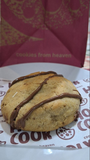
A HORA DOS COOKIES Tem jeito melhor de começar a semana do que ganhando uma linda caixa de cookies da Holy Cook? Nesta caixinha, vieram 4 deliciosos c
abrir no Instagramcomo ter mais criatividade quando você TRABALHA com criatividade? dica 1: mexe o corpo. cérebro parado, ideia travada. dica 2: alimenta o repertório.
abrir no InstagramVídeo de promoção já pronto, guardado para quando houver campanha.
ALÔ, HOLYCOOKIERS! 🗣️ O sabadouuu está diferente por aqui. 😎 ÚLTIMO DIA da BLACK WEEK para vocês aproveitarem muito com adicional de SORVETE GRÁTIS! 😋
abrir no InstagramTudo que a conta já publicou em vídeo, do maior alcance para o menor. A coluna x mediana compara o vídeo com o vídeo típico do próprio perfil.
| Views | x med. | Data | De quem | Link | Sobre | |
|---|---|---|---|---|---|---|
| 1.558.003 | 523.2x | 2025-05-29 | próprio | abrir | Já marca a best pra vir na Holy com você 🫶🏻 #cookies #holycook | |
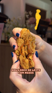 | 1.538.408 | 516.6x | 2025-04-07 | próprio | abrir | Mais alguém aí procurando um docinho sem chocolate? Vem pra Holy que aqui tem cookies supe |
| 376.420 | — | 2025-01-23 | @holycook3 | abrir | MEZANINO PRA ELA? 🗣️ vc decide depois da primeira mordida E no episódio de hoje, uma sobre | |
| 111.162 | 37.3x | 2024-06-20 | próprio | abrir | As vezes tudo que a gente precisa é uma pausa no meio do dia pra tomar uma bebida quente ( | |
| 107.361 | — | 2025-04-10 | @comendoporcampinas | abrir | 🍪 COOKIE RECHEADO NA FAIXA! 😍🔥só passar na loja e pegar! Galera, fomos conhecer o @holycoo | |
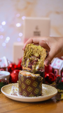 | 84.509 | — | 2024-11-18 | @holycook3 | abrir | A melhor época do ano JÁ CHEGOU! E você já encomendou o seu cookietone? São 10 sabores esp |
| 78.548 | — | 2026-03-16 | @agata.queirozz | abrir | Ovos de Páscoa da @holycook.hortolandia @holycook.campinas 🤎 Correm para fazer suas encom | |
| 76.653 | — | 2026-03-11 | @gbpassarelli_ | abrir | Escolhi a Holy Cook para os meus presentes de Páscoa porque quando o assunto é qualidade… | |
| 67.925 | — | 2025-05-27 | @holycook3 | abrir | Vocês comentaram muitooo o sabor favorito de vcs, então chegou a hora de perguntar para as | |
| 40.591 | 13.6x | 2025-07-16 | próprio | abrir | É isso ai, O MAIS PEDIDO por vocês voltooouuuuu 🍪 Nosso cookie de Ovomaltine está o #tbt d | |
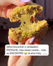 | 38.242 | 12.8x | 2025-04-28 | próprio | abrir | Hey PISTACHELOVER vc precisa provar o nosso cookie de Pistache😋🤎 Vem pra Holy garantir o s |
| 35.620 | — | 2025-12-15 | @comendoporcampinas | abrir | 🎄 O COOKIETONE MAIS DESEJADO DO NATAL! 🍪🔥 Galera… vocês NÃO estão preparados pro Cookieton | |
| 35.250 | 11.8x | 2025-04-30 | próprio | abrir | Hoje é dia de PROMO Compre 4, leve + 1 grátis😍 NUTELLA, KINDER BUENO E DUO são nossos favo | |
| 31.474 | — | 2025-05-05 | @holycook3 | abrir | Não é um segredo… é O SEGREDO! 😮💨🤎 Só não gosta quem não provou, CROISSANT @mercimerci_pa | |
| 27.477 | 9.2x | 2025-10-24 | próprio | abrir · na grade | Já conhecem nossa TORTA PFT de cookie? Super recheada de Kinder com Nutella🤤 Ela está disp | |
| 25.323 | — | 2025-07-31 | @holycook3 | abrir | Você precisa conhecer a gente 🗣️🍪 Depois de mais de 2 anos trazendo os melhores cookies di | |
| 25.281 | — | 2025-03-27 | @holycook3 | abrir | Quando falamos que é artesanal, é ARTESANAL MESMO 🤣🥲 Juro, vocês não estão preparadas, é m | |
| 21.091 | — | 2025-04-16 | @holycook3 | abrir | INVADINDO A FÁBRICA NO MEIO DA PÁSCOA 🤎🗣️ Essa Páscoa tá o puro creme do SURTO 🤯 Vocês che | |
| 19.448 | — | 2025-02-14 | @holycook3 | abrir | GLOW UP DO NOSSO OURO BRANCO CHEGOU ✨🤎 Temos duas receitas maravilhosas! - A nossa antiga, | |
| 18.872 | — | 2024-12-17 | @holycook3 | abrir | ELE CHEGOU! O recheio que é a cara do NATAL 🗣️🤎 Nosso Cookie de Gingerbread é feito com CH | |
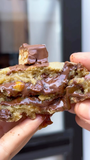 | 18.745 | — | 2024-09-16 | @holycook3 | abrir | Mais um especial tá ON! HOLY SNICKERS 🤤😮💨🍪 Recheio totalmente artesanal de caramelo salga |
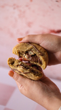 | 17.701 | — | 2025-02-25 | @holycook3 | abrir | Lembrando que isso NÃO SIGNIFICA que não vou pedir um pedacinho 🥲😮💨 Quem aí se identifico |
| 15.187 | — | 2024-12-12 | @holycook3 | abrir | E vamos de CONTAGEM REGRESSIVA? falta 01 diazinho para o mais NOVO SABOR de natal da Holy | |
| 15.059 | — | 2025-03-18 | @holycook3 | abrir | ATIVA O LEMBRETE PARA O DIA 20 🤎🐇 A melhor época do ano chegou e chegou CHEGANDO 🗣️ (PS: a | |
| 14.976 | — | 2025-07-30 | @holycook3 | abrir | Em menos de 04 anos a @_givictoriaa conheceu cada pedacinho da Holy, e claro, CRESCEU MUIT | |
| 13.776 | — | 2025-02-07 | @holycook3 | abrir | CHEGOU SUA NOVA BEBIDA FAVORITA DA HOLY🤎 Ela é muitooo refrescante! 🧊 FROZEN DE MORANGO 🍓🤤 | |
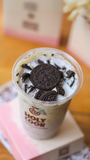 | 13.474 | — | 2025-01-09 | @holycook3 | abrir | *OREO RETURN* 🗣️ Vocês pediram e nós atendemos! O sabor Oreo ESTÁ DE VOLTA 🥹 MASS dessa ve |
| 13.365 | — | 2025-06-10 | @holycook3 | abrir | O arraiá da Holy está chegando! E as meninas confirmaram: se a Holy fosse uma barraquinha | |
| 12.837 | — | 2024-10-16 | @holycook3 | abrir · na grade | Quarta e dia oficial de pedir seu Holy Brownie 😎😜 Receita exclusiva da Holy, com aquela ca | |
| 12.418 | — | 2024-08-21 | @holycook3 | abrir | Pra não pensar que ainda falta muito tempo pro fim de semana, um Holy Brownie é o pedido p | |
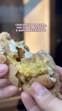 | 12.048 | — | 2024-09-23 | @holycook3 | abrir · na grade | I CAN’T WAIT FOR: MARACUJÁ 🤤😮💨 Não precisa esperar mais, finalmente Holy Maracujá chegou! |
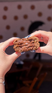 | 11.775 | 4.0x | 2025-10-01 | próprio | abrir | Eu amooo um vídeo de produção, e esse aqui é do nosso FERRERO ROCHER 🤎 Quem provou sabe o |
| 11.336 | 3.8x | 2026-03-19 | próprio | abrir | Você precisaaa vir provar nosso Kinder Bueno 🤎 👉🏻 Ganache de chocolate ao leite, creme cro | |
| 11.222 | — | 2024-12-13 | @holycook3 | abrir | ELE CHEGOU! A carinha do Natal e nosso sabor FAVORITO para esse fim de ano🗣️🤎 Nosso GINGER | |
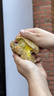 | 11.016 | — | 2024-10-03 | @holycook3 | abrir | SAIU A NOTÍCIA QUE OS HOLYCOOKIERS ESPERAVAM 😭SIM, AGORA HOLY MARACUJÁ ESTÁ OFICIALMENTE D |
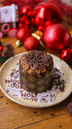 | 10.478 | — | 2024-11-11 | @holycook3 | abrir | A MELHOR ÉPOCA DO ANO ESTÁ CHEGANDO! Quem aí estava com saudade dos nossos cookietones? E |
| 10.317 | — | 2024-09-09 | @holycook3 | abrir | Edição limitada: Holy Macadâmia no nosso especial 4 sabores 1 por semana especial de niver | |
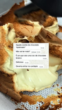 | 10.177 | 3.4x | 2025-12-03 | próprio | abrir | O nosso 4º lançamento de natal chega SEXTA e só quem já provou ano passado sabe a ansiedad |
| 9.711 | — | 2025-04-25 | @holycook3 | abrir | A Páscoa 2025 foi um SUCESSO! Sabe porque? Porque temos os MELHORES HOLYCOOKIERS 🤎🫰🏻 Obrig | |
| 9.620 | — | 2025-01-20 | @vimarangone | abrir | O pedido que não era o que eu esperava… Na verdade, era muito mais! ✨ Esse é o lançamento | |
| 9.446 | — | 2025-01-08 | @holycook3 | abrir | Vocês NÃO estão PREPARADAS pra esse #RETURN? 🗣️ Como você acha que ele voltará pro cardápi | |
| 9.370 | — | 2025-01-15 | @holycook3 | abrir | Atenção Holycookiers, ISSO NÃO É UM COOKIE! 🍪 E foram 03 pedidos por engano, traremos mais | |
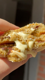 | 9.358 | — | 2024-08-06 | @holycook3 | abrir · na grade | Que a gente AMA o cookie duo não é segredo pra ninguém, agoraaaaaa cookie duo na PROMO é M |
| 9.321 | — | 2025-01-21 | @holycook3 | abrir | Eai Holycookier, OQ ACONTECEU dps disso? 👀 1- Nada, é REQUISITO assistir Mastercheff em qu | |
| 9.239 | 3.1x | 2025-09-01 | próprio | abrir | Algumas Holycookiers provarem EM PRIMEIRA MÃO os 3 sabores EXCLUSIVOS DO NOSSO BDAY 🥹🤎🥳 Es | |
| 8.490 | — | 2025-07-02 | @iampaulamoreira | abrir | “Sim, eu treino. Mas também me respeito. E cookies são “sagrados”. 💪🍪🤎 @holycook.campinas | |
| 8.395 | — | 2024-11-07 | @holycook3 | abrir | A melhor época do ano está chegando na Holy 🎄🤤🤎 Anota aí: 14 de Novembro 🗓️ Fica de olho p | |
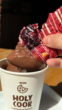 | 8.265 | — | 2024-08-08 | @holycook3 | abrir · na grade | Toda a perfeição do cookie red velvet recheado com cheesecake de frutas vermelhas e nosso |
| 7.959 | — | 2024-09-11 | @holycook3 | abrir · na grade | Seu milkshake favorito te espera aqui na Holy 🤤❄️ Nós sabores: Pistache, RedVelvet, Browni | |
| 7.443 | — | 2024-10-08 | @holycook3 | abrir · na grade | Cookie Nutella, Red Velvet ou os dois? 🍪 Seu Holyzinho favorito te espera 🤤 Americana: - R | |
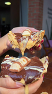 | 7.315 | 2.5x | 2026-03-18 | próprio | abrir · na grade | MUITOOO RECHEIO! Nosso Kinder Bueno é feito 100% artesanal aqui na Holy 👉🏻 Ganache de choc |
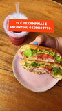 | 7.299 | 2.5x | 2025-06-25 | próprio | abrir · na grade | Holy Cook Campinas não é só cookies🍪🫶🏻 Além dos + de 18 sabores de cookies, temos: 🥤Milksh |
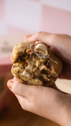 | 6.227 | 2.1x | 2024-10-14 | próprio | abrir · na grade | O Holyzinho 🍪 que conquistou nosso coração 🤏 Cookie Kinder Bueno White, massa tradicional |
| 5.460 | 1.8x | 2024-05-22 | próprio | abrir | Quem aí AMA nosso milkshake RedVelvet? 🤤 Só quem já experimentou sabe que é a perfeição em | |
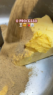 | 5.210 | 1.7x | 2026-07-31 | próprio | abrir · na grade | Aqui na Holy os nossos cookies, tortas, brownies… são produzidos artesanalmente na nossa F |
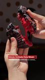 | 4.990 | 1.7x | 2025-11-26 | próprio | abrir | Cookie edição LIMITADA da Holy Week UPSIDE COOKIE 🖤🍪 - Feito com massa preta de cacau blac |
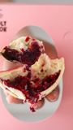 | 4.977 | — | 2026-03-24 | @isa_milan | abrir | NOTÍCIA URGENTE!!!!🚨 Esta aberta a temporada de páscoa na @holycook3 @holycook.campinas 🐰🤍 |
| 4.380 | 1.5x | 2024-05-31 | próprio | abrir · na grade | Sabe o que vai te esquentar nesse friozinho? 🥶 CHOCOLATE CREMOSO + PÃO DE QUEIJO da Holy 🍫 | |
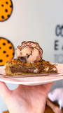 | 4.372 | 1.5x | 2025-10-31 | próprio | abrir · na grade | A @judemoura_ pediu essa combinação semana passada e a gnt ficou MTOOO CURIOSAS para prova |
| 4.333 | 1.5x | 2024-11-08 | próprio | abrir | ALÔ, HOLYCOOKIERS! A BLACK FRIDAY CHEGOU TRAZENDO O OREO BLACK DE VOLTAAA! 🗣️ MAS, COMO TU | |
| 4.300 | 1.4x | 2024-08-19 | próprio | abrir · na grade | A combinação perfeita pra começar a sua semana 😮💨🤏 VEM PRA HOLY 🏠🤎 ↴ Rua Cônego Nery, 463 | |
| 4.153 | 1.4x | 2024-09-03 | próprio | abrir · na grade | Já conhece o nosso cookie M&M’S? Recheado com chocolate ao leite e finalizado com M&M’S 😮 | |
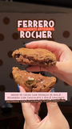 | 4.122 | 1.4x | 2025-09-08 | próprio | abrir | O cookie de FERRERO ROCHER CHEGOU POR AQUI (com quantidades limitadas!) 😋🍪 O que os Holyco |
| 3.942 | — | 2025-06-28 | @mariassisalves | abrir | Toda hora é hora de um @holycook.campinas Por que o treino ta muito mais que pago 🚴🏻♀️🏋🏻 | |
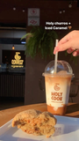 | 3.907 | 1.3x | 2024-06-03 | próprio | abrir · na grade | Nada como nosso cookie favorito + aquela bebida com café da Holy pra começar MUITO bem nos |
| 3.907 | 1.3x | 2024-06-12 | próprio | abrir | LOVE IS IN THE AIR na Holy 🤎 Pode ser pro seu respirante, pro seu conversante e até ficant | |
| 3.861 | 1.3x | 2024-12-02 | próprio | abrir | Esse ano os pedidos de Natal aqui na Holy estão diferentes…e nem é meme! 😂 Quem aí acha qu | |
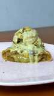 | 3.776 | 1.3x | 2025-10-21 | próprio | abrir | ATENÇÃO PISTACHE LOVERS 🗣️ Chegou o momento de vocês provarem essa combinação! HOLY ICE CR |
| 3.747 | 1.3x | 2025-05-23 | próprio | abrir · na grade | Sextou com S de “Só preciso de um cookie da Holy hoje” 🤤 Nada vai melhorar mais meu dia do | |
| 3.729 | 1.3x | 2025-11-21 | próprio | abrir | A melhor época do ano: CHEGOU! 🎄🗣️ Os queridinhos de vocês voltaram com tudooooh! SIM, nos | |
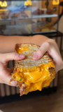 | 3.594 | 1.2x | 2026-04-16 | próprio | abrir · na grade | Um queijo quente e não quero guerra com ninguém 😋🤎 Pão de azeite da @padocadaalma + queijo |
| 3.554 | 1.2x | 2025-05-26 | próprio | abrir | Vem aí #tbt da Holy dia 29.05 ✨🍪 MUITOOOS sabores de cookies, bebidas, sorvetes e etc… pas | |
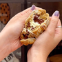 | 3.461 | 1.2x | 2025-03-18 | próprio | abrir | E hoje nosso Cookie do dia na PROMO é o queridinho da Holy: DUO - o equilíbrio perfeito do |
| 3.427 | — | 2025-07-04 | @by.tamarabrito | abrir | “Tudo comunica: o ambiente, o sabor, o look. Experiência linda na @holycook.campinas com a | |
| 3.406 | 1.1x | 2026-04-27 | próprio | abrir · na grade | Fala sério? Quem não ama o cookie de Kinder com Nutella é pq ainda não provou 🫣🤎👀 Contaaa | |
| 3.332 | 1.1x | 2024-07-15 | próprio | abrir | Você também AMA pistache? Por aqui somos obcecados 😮💨😛🤏 Pistache cremoso chegou na Holy, | |
| 3.323 | 1.1x | 2026-02-26 | próprio | abrir · na grade | Quinta e Sexta é um eventooo aqui na Holy porque ela aparece 🤎🤌🏻 Nossa torta PFTA de KINDE | |
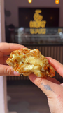 | 3.217 | 1.1x | 2026-05-20 | próprio | abrir | Um pouquinho da nossa produção do COOKIE DE BALA BAIANA 🍪🥥🇧🇷 Recheado, massa tradicional c |
| 3.195 | 1.1x | 2026-05-16 | próprio | abrir | As meninas da Holy já aprovaram o novo sabor 🇧🇷🍪 A partir de segunda-feira dia 18 você já | |
| 3.165 | 1.1x | 2025-10-30 | próprio | abrir · na grade | Fala sério nosso QUEIJO QUENTE de cafézinho da tarde é tudo o que vc estava precisando nes | |
| 3.124 | 1.0x | 2026-03-13 | próprio | abrir | Quando falamos que nossos ovos são artesanais é isso aqui que queremos dizer 🐰🤎 Casquinha | |
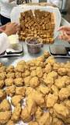 | 3.096 | 1.0x | 2026-06-18 | próprio | abrir · na grade | Ele CHEGOU, o nosso cookie da FRANÇA 🍪🇫🇷 👉🏻 massa feita com manteiga noisette (manteiga to |
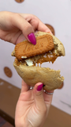 | 2.980 | 1.0x | 2026-02-19 | próprio | abrir | Ele está de volta por aqui.. MAS SÃO QNTD LIMITADAS 🚨🗣️ Nosso Biscoff feito com a pasta pu |
| 2.976 | 1.0x | 2024-11-30 | próprio | abrir | ALÔ, HOLYCOOKIERS! 🗣️ O sabadouuu está diferente por aqui. 😎 ÚLTIMO DIA da BLACK WEEK para | |
| 2.971 | 1.0x | 2026-03-26 | próprio | abrir | A Isa é muitooo fã de Red Velvet, então convidamos ela pra provar a nova versão desse ano | |
| 2.956 | 1.0x | 2026-03-03 | próprio | abrir | Aqui cada um dos ovos são feitos manualmente, com recheio 100% artesanal, frutas de verdad | |
| 2.879 | 1.0x | 2025-12-18 | próprio | abrir | Passando para te lembrar que nosso GINGERBREAD FICA SÓ ESSE MÊS DE DEZEMBRO POR AQUI 😭🍪 Fe | |
| 2.758 | — | 2025-05-26 | @dicasdami | abrir | A HORA DOS COOKIES Tem jeito melhor de começar a semana do que ganhando uma linda caixa de | |
| 2.745 | 0.9x | 2024-12-05 | próprio | abrir | Vocês pediram e a Holy atendeu! 🤪 AMANHÃ, dia 06/12, LANÇAMENTO das Tortas de Natal EM PED | |
| 2.630 | 0.9x | 2025-04-02 | próprio | abrir | Hoje tem PROMO compre 4, ganhe 1! Duviiiido você resistir ao nosso queridinho CHOColatuuud | |
| 2.571 | 0.9x | 2026-02-27 | próprio | abrir | Cada um com seus amores né 🤣🤎 Qual é o seu? #cookies #valentinesday #namoro #frutas #meme | |
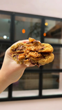 | 2.410 | 0.8x | 2026-06-08 | próprio | abrir | Um pouquinho da nossa produção do cookie REESE’S 🍪🥜🤎🇺🇸 Inspirado em sabores dos EUA para a |
| 2.396 | 0.8x | 2025-12-10 | próprio | abrir | Esse ano nosso cardápio de Natal está mais que especial ✨🍪🎄 Temos 8 sabores de COOKIETONES | |
| 2.365 | — | 2026-01-13 | @by.juliaeduarda | abrir | como ter mais criatividade quando você TRABALHA com criatividade? dica 1: mexe o corpo. cé | |
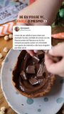 | 2.326 | 0.8x | 2026-03-06 | próprio | abrir | Imagine pedir um ovo só pra vc e adicionar um sorvete… HMMM Corre pedir os seus favoritos! |
| 2.307 | 0.8x | 2026-04-15 | próprio | abrir | Se vc amaa promo, vc já é Holycookier! Segunda é a PROMO compre 4 cookies e leve +1 (desco | |
| 2.175 | 0.7x | 2026-01-19 | próprio | abrir · na grade | Ano passado uma das nossas maiores conquistas foi com certeza PRODUZIR NOSSO PRÓPRIO SORVE | |
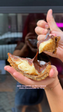 | 2.173 | 0.7x | 2026-04-01 | próprio | abrir | Domingo é dia de Páscoa e de comer mtooos ovos! 🐰🤎 Se você ainda não encomendou os seus, v |
| 2.131 | 0.7x | 2026-02-18 | próprio | abrir | É pra quinta-feira… #biscoff #cookies #produção #chocolate | |
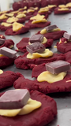 | 2.010 | 0.7x | 2026-01-16 | próprio | abrir · na grade | Essa quantidade de produção são em semanas “calmas” disseram elas 🤣🙌🏻🤧 Aqui na nossa fábri |
| 1.945 | 0.7x | 2026-05-18 | próprio | abrir | A Samy veio anunciar nosso primeiro sabor dessa competição, e ele tem tudoooo a ver com el | |
| 1.857 | 0.6x | 2025-02-27 | próprio | abrir · na grade | ||
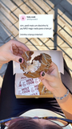 | 1.844 | 0.6x | 2026-04-24 | próprio | abrir · na grade | Às vezes nossa sanidade mental depende 100% de um docinho pós almoço, né? 🍪🤎 O cookie do v |
| 1.790 | 0.6x | 2026-02-04 | próprio | abrir · na grade | Fala sério, quem não ama um brigadeiro de panela… pra desistir um filminho, num dia friozi | |
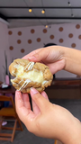 | 1.775 | 0.6x | 2026-04-09 | próprio | abrir · na grade | Fala sério, quem não ama um limãozinho né? A produção do nosso cookie é feito 100% com lim |
| 1.735 | 0.6x | 2026-03-02 | próprio | abrir | Nosso Frozen morango recebeu um GLOW UP 🍓✨ Antes ele era feito com água, gelo, geleia e aç | |
| 1.634 | 0.5x | 2026-04-13 | próprio | abrir · na grade | Segundou do jeito que a gente gosta: com muito chocolate 🤤🍪 Nosso Cookie Choc é aquele clá | |
| 1.595 | 0.5x | 2026-03-21 | próprio | abrir · na grade | A Malu simplesmente acertou TODOS os sabores de milkshake 😮💨🥤 COOKIE: Sabor baunilha com | |
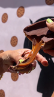 | 1.571 | 0.5x | 2026-03-09 | próprio | abrir | DONA COELHA INFORMA: são 09 sabores de ovos com casquinha de COOKIE e casquinha de CHOCOLA |
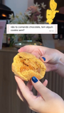 | 1.531 | 0.5x | 2026-02-13 | próprio | abrir · na grade | Não estar comendo chocolate não é motivo para não comer cookies 🫣🤎🍪 O DOCE DE LEITE ARTESA |
| 1.528 | 0.5x | 2026-06-01 | próprio | abrir | E nosso segundo país já está por aqui, EUA 🇺🇸🍪 Semana passada escolhemos a Samy para repre | |
| 1.486 | 0.5x | 2026-04-20 | próprio | abrir · na grade | Qual seu combinho favorito? 🍪☕ PSIU: amanhã é feriado e estaremos ON loja das 13h às 18h30 | |
| 1.484 | 0.5x | 2026-05-15 | próprio | abrir | 05 novos sabores de COOKIE estão entrando pra nossa seleção 🍪 Cada um deles ficará disponí | |
| 1.451 | 0.5x | 2026-07-15 | próprio | abrir | Já virou o favorito de mtos Holycookiers, o nosso novo cookie do Japão 🇯🇵🍪 Escolhemos ingr | |
| 1.438 | 0.5x | 2026-04-02 | próprio | abrir | todo mundo sabe que a páscoa na Holy é um surto atrás do outro, né? 🐰🤯 tudo artesanalmente | |
| 1.364 | 0.5x | 2026-06-20 | próprio | abrir · na grade | “Aline vamos ali gravar um vídeo rápido do seu react” Resultado: 1h30 de conteúdos com as | |
| 1.270 | 0.4x | 2026-08-06 | próprio | abrir · na grade | Quintoou e a Lu veio contar seu combinho favorito 🤎 🥐 Lanchinho de Croissant: Croissant da | |
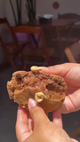 | 1.237 | 0.4x | 2026-02-02 | próprio | abrir | Nosso cookie de Ferrero Rocher está um sonho de tão pfto🤤🤎 Ele é viciante superrrrr rechea |
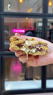 | 1.081 | 0.4x | 2026-02-18 | próprio | abrir | O fav dos nossos holycookiers e do nosso coração: HOLY DUO 🤎 Cookie com massa tradicional |
| 1.056 | 0.4x | 2026-04-29 | próprio | abrir | todooo mundo fala sobre flor, perfume, maquiagem, masss ninguém vê aquele bombom que ela g | |
| 1.004 | 0.3x | 2026-08-21 | próprio | abrir | O cookie mais pedido por aqui, fez um sucesso entre os nossos Holycookiers e agora está de | |
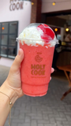 | 961 | 0.3x | 2026-02-12 | próprio | abrir | GLOW UP VEIO 🗣️🤌🏻🍓 As meninas da Holy já provaram, e agora é SUA VEZ! Ele já está disponív |
| 884 | 0.3x | 2026-02-09 | próprio | abrir | Nosso cookie de M&Ms impossível resistir 🤤 Massa tradicional com pedaços de M&MS e recheio | |
| 612 | 0.2x | 2026-08-24 | próprio | abrir | Você + cookie favorito acompanhado da bebida perfeita (temos opções quente e geladas), não | |
| 558 | 0.2x | 2026-08-24 | próprio | abrir | Comece a semana da melhor forma! Seu COOKIE favorito + SORVETE 😮💨🍦🍪🤎 Já experimentou?? VE | |
| 342 | 0.1x | 2026-08-24 | próprio | abrir | LOVE IS IN THE AIR na Holy 🤎 Pode ser pro seu respirante, pro seu conversante e até ficant |